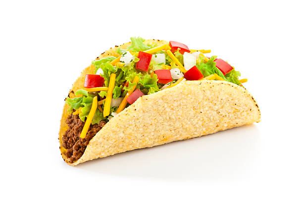

Home
Tacos al pastor

Descripcion
Un clásico mexicano con tortillas calientes, carne jugosa y una mezcla fresca de cilantro y cebolla, perfectos para disfrutar con tu salsa favorita.
Ingredientes
- 500 g de carne de res (bistec o diezmillo)
- Sal y pimienta al gusto
- Jugo de 1 limón
- 8 tortillas de maíz
- Cebolla picada, cilantro picado y salsa (opcional)
Preparacion
- Marina la carne con sal, pimienta y jugo de limón durante 10-15 minutos.
- Cocina la carne en una sartén o parrilla bien caliente hasta que esté dorada (aproximadamente 3-5 minutos por lado).
- Retira la carne, córtala en trozos pequeños.
- Calienta las tortillas y sirve la carne encima.
- Agrega cebolla, cilantro y salsa al gusto.